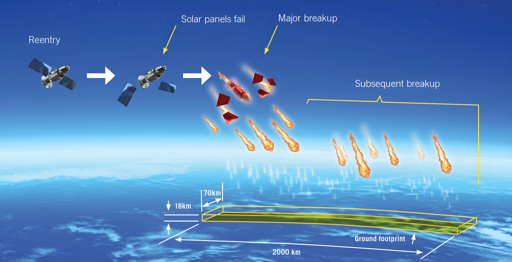

Space debris
Space debris refers to defunct human-made objects in space, primarily in Earth's orbit. These objects include non-functional satellites, spent rocket stages, fragments from spacecraft, and other debris resulting from collisions or disintegration events. These debris can vary in shape and size
Importance
Imaging space debris helps track the location, trajectory, and characteristics of objects in orbit. This information is crucial for space traffic management, enabling satellite operators and space agencies to plan satellite launches, maneuvers, and avoid potential collisions. They pose a significant risk to operational satellites, spacecraft, and even crewed missions in space. Collisions with space debris can cause catastrophic damage due to the high velocities involved, creating even more debris.

Adaptive
Imaging
Of space debris
Imaging